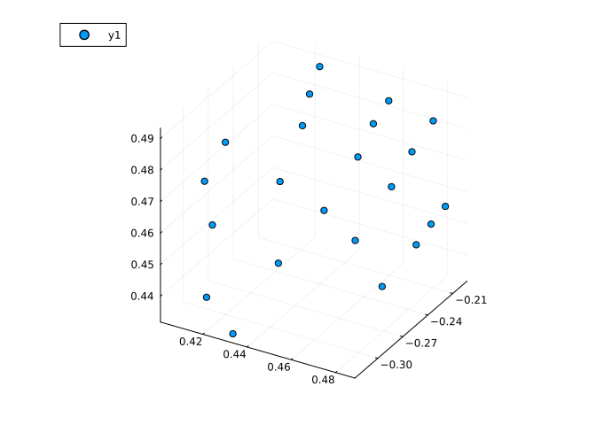
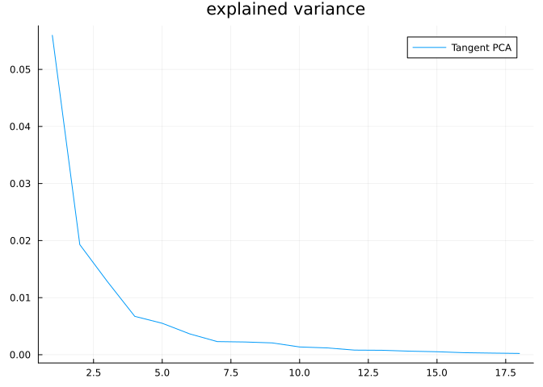
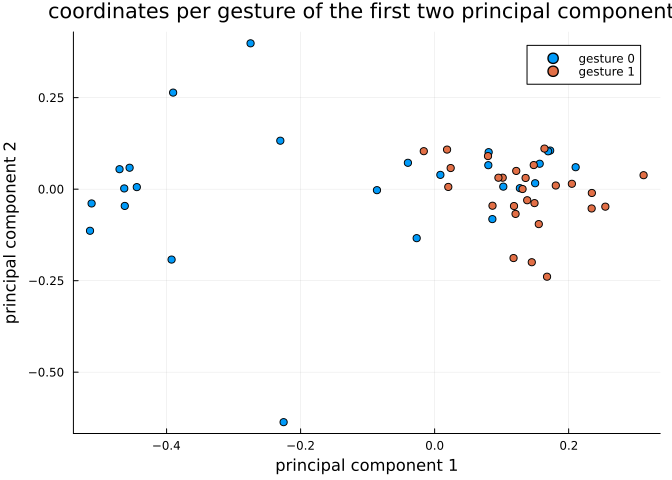
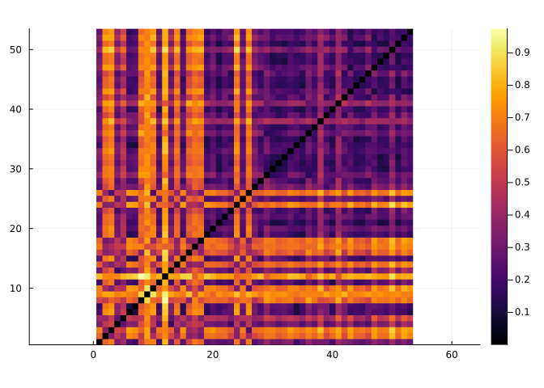

Hand gesture analysis
In this tutorial we will learn how to use Kendall’s shape space to analyze hand gesture data.
Let’s start by loading libraries required for our work.
using Manifolds, CSV, DataFrames, Plots, MultivariateStatsOur first function loads dataset of hand gestures, described here.
function load_hands()
hands_url = "https://raw.githubusercontent.com/geomstats/geomstats/master/geomstats/datasets/data/hands/hands.txt"
hand_labels_url = "https://raw.githubusercontent.com/geomstats/geomstats/master/geomstats/datasets/data/hands/labels.txt"
hands = Matrix(CSV.read(download(hands_url), DataFrame, header=false))
hands = reshape(hands, size(hands, 1), 3, 22)
hand_labels = CSV.read(download(hand_labels_url), DataFrame, header=false).Column1
return hands, hand_labels
endload_hands (generic function with 1 method)The following code plots a sample gesture as a 3D scatter plot of points.
hands, hand_labels = load_hands()
scatter3d(hands[1, 1, :], hands[1, 2, :], hands[1, 3, :])
Each gesture is represented by 22 landmarks in $ℝ³$, so we use the appropriate Kendall’s shape space
Mshape = KendallsShapeSpace(3, 22)KendallsShapeSpace{3, 22}()Hands read from the dataset are projected to the shape space to remove translation and scaling variability. Rotational variability is then handled using the quotient structure of KendallsShapeSpace
hands_projected = [project(Mshape, hands[i, :, :]) for i in axes(hands, 1)]In the next part let’s do tangent space PCA. This starts with computing a mean point and computing logithmic maps at mean to each point in the dataset.
mean_hand = mean(Mshape, hands_projected)
hand_logs = [log(Mshape, mean_hand, p) for p in hands_projected]For a tangent PCA, we need coordinates in a basis. Some libraries skip this step because the representation of tangent vectors forms a linear subspace of an Euclidean space so PCA automatically detects which directions have no variance but this is a more generic way to solve this issue.
B = get_basis(Mshape, mean_hand, ProjectedOrthonormalBasis(:svd))
hand_log_coordinates = [get_coordinates(Mshape, mean_hand, X, B) for X in hand_logs]This code prepares data for MultivariateStats – mean=0 is set because we’ve centered the data geometrically to mean_hand in the code above.
red_coords = reduce(hcat, hand_log_coordinates)
fp = fit(PCA, red_coords; mean=0)PCA(indim = 59, outdim = 18, principalratio = 0.9900213563800988)
Pattern matrix (unstandardized loadings):
─────────────────────────────────────────────────────────────────────────────────────────────────────────────────────────────────────────────────────────────────────────────────────────────────────────────────────────────────────────────────────────────
PC1 PC2 PC3 PC4 PC5 PC6 PC7 PC8 PC9 PC10 PC11 PC12 PC13 PC14 PC15 PC16 PC17 PC18
─────────────────────────────────────────────────────────────────────────────────────────────────────────────────────────────────────────────────────────────────────────────────────────────────────────────────────────────────────────────────────────────
1 -0.0290105 0.0208927 -0.01643 0.00190549 0.00901145 0.000643771 -0.00363047 -0.00217327 0.00312554 -0.00356053 0.00478045 0.00165704 0.00218866 0.0037857 0.000320345 -0.00145212 0.000948335 -0.00184176
2 0.0172527 0.0165863 -0.0168821 -0.0183233 0.0121555 0.00833736 0.00187667 -0.000648234 0.00706323 0.00583622 -0.0044018 0.0012355 0.00118376 -0.00246016 0.00446684 -0.00498993 -0.0028049 -0.00259758
3 0.0447499 -0.00487667 -0.00247071 -0.00148697 -0.00200127 -0.00795338 0.00905314 0.00687454 0.0114088 -0.000998774 0.00459101 0.00645948 0.00073043 0.00591995 -0.00520394 0.00129428 -0.000463386 -0.00207384
4 -0.00881422 -0.0341713 0.00749624 0.00795209 -0.00260601 0.00356386 0.00204456 -0.00905276 0.00826807 0.00012095 0.000768538 -0.000460691 0.00411022 -0.00216294 -0.000650028 0.00251224 0.00149784 -0.00181133
5 0.0325794 -0.023796 0.000642765 0.00509869 0.00759807 0.00483368 -0.00252952 0.00656179 0.00322274 -0.000313146 0.00143493 -0.000676479 0.000146354 -0.00266203 0.00353957 0.0021415 -0.00457168 0.00282965
6 -0.00617763 6.91201e-5 0.00765638 0.00183758 0.00157382 0.00184956 -0.00797935 0.000700457 0.0087012 0.00992564 0.00263642 0.00294279 -0.0092 0.00133877 0.00145735 -0.0014816 0.00235123 -0.00039541
7 -0.0183122 0.0131045 0.0125222 -0.00638021 -0.006709 -0.00013628 0.00858169 -0.00159031 -0.00585433 -0.0032447 0.00880912 -0.00149308 0.000724205 0.00469925 0.00432005 0.0012382 -0.00251638 6.89878e-5
8 0.0392874 -0.0152552 -0.00404674 -0.0183856 -0.0054739 0.000203488 0.00687526 0.00989129 -0.00570517 0.00234255 -0.00221344 -0.00514796 0.000658069 0.00220789 7.02581e-5 0.000380265 0.0007751 0.00234631
9 -0.00525049 -0.0181427 -0.00473895 -0.0128126 0.000405834 -0.00936332 -0.000781745 0.011196 -0.00498502 0.00199077 0.00355555 -0.00334398 0.00763648 0.000311697 -0.000844841 -0.00526438 -0.00201977 0.00188678
10 0.0771681 0.0248294 -0.00375548 -0.0138712 -0.0126479 -0.00543573 -0.0136609 -0.00408721 -0.00445726 -0.00407287 0.00696664 -0.00158737 -0.00201909 -0.00211184 0.000907502 0.00235338 -0.00259266 0.00114594
11 -0.0013693 0.0125762 -0.00145726 0.0119688 -0.00362363 0.00954477 0.000894749 0.00311196 0.000186917 0.00923739 0.0036434 0.00484736 0.000288834 -0.00269382 -0.00194147 -0.000702207 -0.00245996 -0.000458531
12 0.00497523 0.0154863 0.0409999 -0.00832204 -0.00216091 0.0149159 0.011796 0.0121391 -0.00292353 -0.00532504 -0.00427894 0.000550893 -0.00408841 0.000520159 -0.00344571 0.000625647 0.000271049 -0.00165807
13 -0.0541357 -0.0291498 0.0140122 0.00292223 0.00128359 0.00301256 -0.00581861 -0.00397323 0.000588485 0.0025976 -0.00442985 -0.00603182 0.00326815 0.00326603 0.000384467 -0.00134404 -0.00160027 -0.00261985
14 -0.0493144 0.0120223 -0.0163111 0.0103746 -0.0126512 -0.011453 0.00488614 -0.00586095 0.0027455 -0.00434342 0.00203457 -0.000941868 -0.00426973 -0.00447805 -0.00239537 -0.00320013 0.000877498 0.000673572
15 -0.00654048 0.00225524 -0.028207 0.00306531 0.00321072 -0.000599231 0.00320363 -0.0059508 -0.00586048 0.0031903 -0.00613799 0.00471076 -0.00101853 0.00294667 -0.000548534 0.00402922 0.000405583 2.6607e-5
16 0.0300802 0.0075843 0.00364836 -0.00205771 -0.0148831 0.0211394 -0.000508637 0.0036868 0.0109845 -0.00574404 -0.00920237 0.0007153 0.000544823 -0.00209521 0.000474541 -0.00052208 0.00180017 0.00202094
17 -0.0110775 0.0373997 -0.00242133 0.00827109 -0.000567586 -0.0141686 -0.000939656 0.00843637 -0.00590348 0.00649057 0.00259619 -0.000897277 0.00443368 -0.0047585 -0.00160148 0.000335684 0.00152076 -0.00300398
18 0.0391783 0.0248007 0.0308429 0.00118303 0.00981074 0.00261316 -0.00100239 -0.0062546 -0.00491006 -0.00506867 0.00441608 -0.00367774 -0.00481009 -0.000493728 -0.00329753 0.000419403 0.000711267 0.000406243
19 0.0138738 -0.0443171 -0.00598066 0.00585226 0.00596223 0.00680714 -0.0079294 -0.00269779 -0.00426069 -0.00718608 0.00761514 0.00336824 -0.00295577 -0.00264683 0.00316699 -0.000418376 -0.00240164 -0.00413196
20 0.0173164 -0.0215417 0.000863689 -0.0205664 0.00121695 0.00307745 0.00191828 -0.00849558 -0.00147893 0.00180504 0.00814434 0.00372913 0.00188294 -0.00170647 -0.00451407 -0.00100769 -0.000238128 -0.000257117
21 0.00338984 0.00237562 0.0237069 -0.0129184 0.00148197 -0.000855367 0.00148785 0.00142366 0.00320966 0.00781237 0.000800995 -0.000516126 0.00440079 -0.0079143 0.00215576 0.00201592 -0.000335618 0.00337192
22 -0.00746071 -0.0116344 0.0021644 0.0152239 0.00723169 0.0120803 -0.000485058 0.00653526 0.0026666 0.00152026 0.0135607 -0.00247612 0.00348543 3.45051e-6 0.0017885 0.000179426 -0.000524643 -0.000805656
23 0.0478442 -0.0227649 -0.0113793 -0.00367693 0.0106966 0.00169994 0.0135303 -0.00344929 0.000128235 0.00063693 -0.00225447 0.000880574 -0.00665083 -0.0050547 -0.00295617 -0.00422433 0.00166798 -0.00189465
24 -0.0142467 0.0166931 0.00516018 0.00593988 -0.0210703 0.00438546 0.00643305 0.00174866 0.00505729 0.000463517 0.00763753 -0.00417294 -0.00156206 0.00540319 -0.00301265 -0.00408336 -0.00144362 -0.000137294
25 0.00108012 0.0195339 0.011519 0.0110158 0.00193433 0.0107534 -0.00146174 0.000236797 0.00226925 -0.00744152 0.00199678 -0.00445237 0.00273993 -0.000207735 -0.00191042 0.00121896 0.00195283 -0.00274164
26 0.0123466 0.0083253 0.00519553 -0.00196478 0.0137825 -0.00233978 -0.00771765 -0.00232805 -0.00279333 0.00340724 0.0012353 -0.00362154 -0.0013554 0.000632953 -2.37112e-5 0.00141247 -0.000568908 -0.000973567
27 -0.00893091 0.00641791 0.0087648 0.00424429 -0.000824081 -0.00761539 -0.0152518 0.00995065 0.00317758 8.84094e-5 -0.00419563 -0.00124495 -0.00589762 -0.000929293 0.00477719 0.00377025 0.00267074 0.000761405
28 0.0378644 -0.0125169 0.012799 0.0178141 0.00260966 -0.00752201 0.00299546 -0.00777486 0.00426756 0.00566038 0.00107451 -0.000215202 -0.00470252 0.00209217 -0.000578698 0.00150591 -0.00148331 0.00229085
29 0.00205475 0.0304241 -0.0354979 0.00394855 -0.00350914 0.00725592 -0.00678139 0.000307436 -0.00315394 -0.00689183 0.000456785 0.00368637 0.00277269 -0.00277076 -0.00422942 0.00223455 0.0015448 -0.00234455
30 0.0749975 -0.00999942 0.00367276 0.0100629 -0.00671752 -0.011357 0.00301586 0.000408736 0.00259563 0.000303288 -0.000111357 -0.00159763 0.00161827 -0.000545339 0.00377406 0.00268094 0.00406555 -0.00203144
31 0.0209729 0.00213421 0.00669869 0.016557 0.00403684 -0.0178951 0.0107244 0.0111298 0.00610797 -0.00390215 -0.00353771 -0.00178467 0.00235713 0.000973802 0.000274041 0.00218045 -0.00215689 -0.00158819
32 -0.0244084 -0.0371206 0.0192767 -0.000685794 0.0158289 -0.001451 -0.00509477 0.00577056 -0.00513049 -0.00950968 -0.00158958 0.000989458 -0.000699212 0.00122133 -0.000191417 0.000911926 0.00209233 -6.04374e-5
33 0.00565764 -0.0172793 0.00401092 -0.00793658 0.00504771 -0.00220381 0.00224319 0.0071918 -0.0124133 0.00175162 0.00348751 0.00633021 -0.00260535 0.00565187 -0.00186287 -0.000238933 0.000666333 0.00250607
34 0.00185581 -0.0166196 -0.0197269 0.00699341 0.00647246 -0.00303065 -0.000117067 0.00490106 0.00667588 -0.00855122 0.00302462 0.00173228 0.00553969 -0.00468124 0.00121978 0.0005079 0.000420239 0.00253235
35 0.0199811 0.0267965 0.0129649 0.00264194 0.000195136 -0.00349662 0.00294599 -0.00187851 0.00177767 -0.0053757 -0.00330811 -0.00295473 0.00208629 -6.97773e-5 -0.00153972 -0.000773065 -0.00157575 -0.000197057
36 0.0175704 0.0191343 -0.0116551 0.00882917 -0.0104714 0.0103777 0.00118041 -0.000696881 0.00192364 0.00744034 0.00497109 -0.00164206 0.00162482 -0.00139405 0.00167977 0.000693101 -0.00132024 0.00297973
37 -0.00462744 -0.013417 0.00735863 0.0138801 -0.0058212 -0.00238145 -0.00576575 0.00188503 0.00101854 0.0035232 0.0016009 0.00106877 -0.00593854 -0.0015165 -0.00563642 -0.000339869 0.00216456 0.002153
38 -0.0218719 0.00531191 0.00305154 0.0241393 0.0234907 0.00316473 0.0020773 -0.00469298 -0.00845531 0.00456344 -0.000534739 0.00131404 -0.00166945 -0.000113877 -0.00168502 0.00333815 -0.00307554 0.00114466
39 -0.00848638 0.0208304 0.00949937 0.0226454 0.0052942 -0.000851704 0.00632965 2.91971e-5 0.00329463 6.28469e-5 0.00660731 0.00235582 -0.00130279 -0.00141865 0.00530658 -0.00248136 0.000456183 0.00125713
40 -0.0887529 -0.0108083 -0.00348235 -0.0197061 -0.00851786 -0.00490488 0.00159713 0.00351037 0.0148414 -0.00401737 0.00779929 0.00245023 -0.00253298 -0.000226246 -0.000206421 0.00510786 0.00148421 0.00186788
41 0.00130006 0.00193007 -0.00297337 0.0070658 0.00888416 0.00665004 -0.013746 0.000961125 0.00363303 0.00316905 0.000576911 -0.00659932 0.00136165 0.0013939 -0.00380487 -0.00444913 0.00366095 0.00144111
42 -0.0207553 0.0174796 -0.00445662 -0.0117613 0.0273261 -0.00065484 0.00296882 0.00593266 0.00162045 -0.00318673 0.0066341 -0.0053347 0.000440878 -0.000644585 -0.00244859 0.00184264 0.00345959 -0.000426283
43 0.0413948 0.00307635 -0.00665062 -0.00226029 0.017443 -0.00424136 0.00950125 -0.00429922 0.00148225 -0.000166312 0.00294757 -0.00069645 0.000696539 0.000366659 0.00282844 -0.00230084 0.0053369 0.00238474
44 0.00449575 0.0201137 0.03094 -0.0058886 -0.00146264 0.0101428 -0.00516029 0.00543426 -0.00941967 0.000969442 -0.000431407 0.0064443 0.00115545 -0.00181689 0.00364823 -0.000426309 0.000849352 -0.00167685
45 -0.0205292 -0.00157548 0.013357 -0.00792343 0.00744915 0.00216668 -0.00243796 0.00180573 0.01512 0.00713893 -0.00283512 0.00430074 0.000788886 0.0049491 0.0029426 -0.00139686 0.00105337 -0.00239361
46 -0.0215505 -0.0112917 0.013841 0.0111599 -0.0105729 0.00953035 0.0113897 -0.00673481 -0.0100248 0.00344613 0.00262901 0.0047878 0.00566946 -6.60172e-5 0.00414744 0.00111141 0.00450865 -0.00145945
47 -0.0171993 0.0180146 0.00810394 -0.00791244 0.0061704 0.00923438 0.000727892 -0.0152243 0.00748635 -0.00599911 -0.00175649 0.00265434 -8.49398e-5 0.00305952 -0.00198115 0.00274446 -0.0028668 0.00323797
48 0.0587549 0.0116068 -0.00915491 0.00448539 0.0104133 0.00457871 0.00126112 0.00499596 0.00964989 -0.00404286 0.000207311 0.003728 -0.000433589 -0.000303131 0.00412588 0.000467283 -0.000916261 -0.00103631
49 -0.00166257 0.0250389 0.00797097 0.000683472 -0.000895449 -0.0133557 -0.00573426 0.000680622 0.00069621 0.00638431 -0.00245348 0.00498899 0.00507946 0.0057863 -0.00069408 0.0014596 0.000877213 -0.000692365
50 -0.0355097 0.0143079 -0.00981991 0.00946907 -0.00422843 -0.00254884 0.00491884 0.00651818 -0.00548423 -0.0071809 9.81603e-5 0.00390103 -0.00712449 0.0013088 0.00694234 -0.00320143 0.000147409 0.00234526
51 0.0456319 -0.0188437 0.00614929 0.01619 -0.0156405 0.00353768 -0.00911906 0.000874972 -0.00121217 -0.00403428 -0.000414905 0.00681573 0.00859836 0.00350106 -0.00263157 -0.00122084 0.00183226 0.00257702
52 0.00746721 0.0133773 -0.0340613 -0.0139034 0.00655522 0.00929538 0.000770716 -0.000483502 -0.00600155 0.00201797 0.0011251 0.00179484 -2.38878e-5 0.00486216 0.00282832 0.00255029 0.00367921 0.00129338
53 0.00823236 -0.00600734 -0.0200329 0.00202998 -0.0011313 0.0105144 0.00321895 0.00687414 0.000987698 0.00431901 0.000760463 -0.00635147 -0.00119575 0.00474285 4.40898e-5 0.00580837 -0.00332298 -0.00201341
54 -0.043754 -0.00171994 -0.00111157 0.00123094 -0.00428039 0.0027972 0.00934907 -0.00596239 -0.00226019 0.001642 -0.00513074 -0.00589632 0.00344517 -0.0042949 0.0025378 0.00306413 0.00186166 0.00125999
55 0.0430398 -0.000525733 0.0081576 -0.00839141 -0.00347855 -0.00933299 0.00251806 -0.0126012 0.002086 0.00272973 0.00204035 -0.000224255 -0.000607192 -0.000454776 -0.000157181 0.00250081 0.00145433 -0.00163108
56 0.0305092 -0.00319322 -0.010629 0.0139009 0.00442941 0.00855659 0.00087527 -0.00330425 0.000399393 -0.000737765 -0.00150343 -0.00754475 0.000704529 0.00851631 0.00185909 -0.00126123 0.00232031 0.00223781
57 0.00321453 -0.0190408 -0.0279848 0.00741802 -0.0157076 0.00592558 0.0020086 0.00843992 -0.00442316 0.00325392 -0.002545 -0.00268433 -0.00623548 -0.00142257 -0.00199612 0.0016597 0.000405685 -0.00229266
58 0.0156328 -0.0074322 0.0066988 -0.0114629 -0.0168092 0.00328227 -0.00226964 -0.00110748 0.000440872 0.00227572 0.00827165 -0.00488151 -0.00316671 -2.58046e-5 0.00360288 0.00115025 0.00316887 -0.00204823
59 -0.00151264 0.00426245 0.00115303 0.00338067 0.00957651 0.0116283 0.00361068 0.0102905 0.00246382 0.00700902 0.00252521 0.00257786 0.000578243 -0.00384276 -0.00597088 0.00283491 0.00171675 0.00226962
─────────────────────────────────────────────────────────────────────────────────────────────────────────────────────────────────────────────────────────────────────────────────────────────────────────────────────────────────────────────────────────────
Importance of components:
──────────────────────────────────────────────────────────────────────────────────────────────────────────────────────────────────────────────────────────────────────────────────────────────────────────────────────────────────────────────────
PC1 PC2 PC3 PC4 PC5 PC6 PC7 PC8 PC9 PC10 PC11 PC12 PC13 PC14 PC15 PC16 PC17 PC18
──────────────────────────────────────────────────────────────────────────────────────────────────────────────────────────────────────────────────────────────────────────────────────────────────────────────────────────────────────────────────
SS Loadings (Eigenvalues) 0.0559745 0.0192925 0.0128414 0.00672244 0.0055061 0.00364815 0.00229962 0.00223028 0.00206984 0.00135745 0.00119 0.000805397 0.000775895 0.000619591 0.00052072 0.000351929 0.000282879 0.000224033
Variance explained 0.474806 0.16365 0.108928 0.0570235 0.0467058 0.0309456 0.0195066 0.0189185 0.0175575 0.0115146 0.0100942 0.00683182 0.00658157 0.00525572 0.00441704 0.00298526 0.00239954 0.00190038
Cumulative variance 0.474806 0.638456 0.747384 0.804407 0.851113 0.882059 0.901565 0.920484 0.938041 0.949556 0.95965 0.966482 0.973063 0.978319 0.982736 0.985721 0.988121 0.990021
Proportion explained 0.479592 0.165299 0.110026 0.0575982 0.0471765 0.0312575 0.0197032 0.0191092 0.0177345 0.0116307 0.010196 0.00690068 0.00664791 0.00530869 0.00446156 0.00301535 0.00242373 0.00191953
Cumulative proportion 0.479592 0.644891 0.754917 0.812515 0.859692 0.890949 0.910652 0.929761 0.947496 0.959127 0.969323 0.976223 0.982871 0.98818 0.992641 0.995657 0.99808 1.0
──────────────────────────────────────────────────────────────────────────────────────────────────────────────────────────────────────────────────────────────────────────────────────────────────────────────────────────────────────────────────Now let’s show explained variance of each principal component.
plot(principalvars(fp), title="explained variance", label="Tangent PCA")
The next plot shows how projections on the first two pricipal components look like.
fig = plot(; title="coordinates per gesture of the first two principal components")
for label_num in [0, 1]
mask = hand_labels .== label_num
cur_hand_logs = red_coords[:, mask]
cur_t = MultivariateStats.transform(fp, cur_hand_logs)
scatter!(fig, cur_t[1, :], cur_t[2, :], label="gesture " * string(label_num))
end
xlabel!(fig, "principal component 1")
ylabel!(fig, "principal component 2")
fig
The following heatmap displays pairwise distances between gestures. We can use them for clustering, classification, etc.
hand_distances = [
distance(Mshape, hands_projected[i], hands_projected[j]) for
i in eachindex(hands_projected), j in eachindex(hands_projected)
]
heatmap(hand_distances, aspect_ratio=:equal)